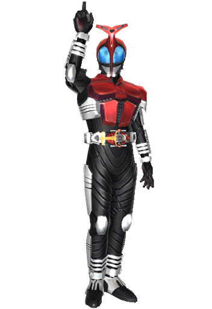

インセクトギア
「俺は天の道を行き総てを司る男だ」

・背景
インセクターを模したギアを用いて戦う戦士。
殻に覆われている防護点の高い状態と、
殻から解き放たれたスピードに優れた状態の2つの状態を用いて戦う。
インセクトゼクターに選ばれたものしかなることはできず、
その全体数は非常に少ない。
・ボーナス特技
【野伏の歩み】【ドッジ】の限界ＳＬｖに＋１のボーナスを得る。
・クラス解説/オススメ特技
スピードで翻弄して敵を殴る！
・特技リスト
名称：【インセクトゼクター】
使用：常時 最大：３
効果：「インセクトゼクター」を所有し、装備することができる。
虫の形をしており見た目は自由。不要な時は所持品から消してしまうこともできる。
データは以下の通り。
名称：インセクトゼクター(ペット)
価格：非売品
解説：拳より少し大きな虫型のギア。
自らの意思を持っており装備者を選ぶ。
「カブト」クラスの特技を使用するには絶対に装備しておかなければならない。
効果：「キャストオフ」状態の時に回避に+1。「キャストオン」状態の時に全ての防護点に+5。
参照：【インセクトゼクター】
ペット特技1：【変身！！】 ペット特技2：【スピードブースト+3】 ペット特技3：【保護システム】
支援【変身！！】：変身状態になり「カブト」の特技を使用できるようになる。 CT：2ターン
常時【スピードブースト+3】：〔先制〕と〔命中〕に+3のボーナスを得る。
最終ダメージ計算後【保護システム】：最終ダメージが自分のHP以下になる場合HPを1のこして変身を解除する。強制発動。

名称：【キャストオフ/キャストオン】
使用：支援ターン 判定：なし 疲労：3
射程：自分 最大：3 CT：1ターン
前提：【インセクトゼクター】
効果：「変身」状態の時に「キャストオフ」と「キャストオン」状態を入れ替える。
「変身」時は「キャストオン状態」
効果は以下の通り。
「キャストオフ」・・・〔回避〕判定に＋SLｖのボーナス、〔先制〕に＋SLvを得る。
「キャストオン」・・・全ての防護点に「SLv*3」、〔命中〕判定に「SLｖ*2」のボーナスを得て、〔移動〕に-2のペナルティを得る。
名称：【武器修練：ガシェット】
使用：常時 最大：無制限
効果：ガシェットを使用した〔命中〕判定に「SLv×2」のボーナスを得る。
また、ガシェットを使用した〔回避〕判定（パリィ）にSLv分のボーナスを得る。
名称：【クロックアップ】
使用：支援ターン 判定：なし 疲労：5
射程：自分 最大：無制限 CT：戦闘終了
前提：【インセクトゼクター】【キャストオン/キャストオフ】
効果：「キャストオフ」時に別時間軸を移動し、高速で行動する。
戦闘終了までに「〔先制〕-（10-SLｖ）」の値で追加ターンをSLv回行う。〔先制〕は元の値以上にはならない。
追加ターンでは「ターン開始」「支援ターン」「ターン終了」は行わない。
名称：【ガシェットアタック/カウンター】
使用：相手の命中判定直後 判定：〔命中〕判定（ガシェット） 疲労：5
射程：1 最大：3 CT：1ターン
前提：【インセクトゼクター】
効果：相手の攻撃に対してカウンターでキックを決める。
相手の命中判定直後にその値を回避値として扱い自身の命中判定を振る。
判定に成功した場合自身の回避に成功したものとして扱い、
さらに致傷力に「(自身の〔先制〕-相手の〔先制〕+SLv)×10」のボーナスを得た「ガシェット」での攻撃を行う。
名称：【クナイブレイガン】
使用：常時 最大：3
前提：【インセクトゼクター】
効果：「クナイブレイガン」を所有し、装備することができる。
不要な時は所持品から消してしまうこともできる。データは以下の通り。
名称：クナイブレイガン（ガシェット）
攻撃：2＋ＳＬｖ×3 体力：7 属性：斬撃/刺突 射程：１（近接）
命中：SLv パリイ：0 価格：非売品
解説：「クナイ」の形をしたガシェット。
支援ターンで銃形態に変化させることができる。
銃形態では攻撃が「SLv×5」射程が10(射撃)として扱い、
両手で使用すると〔命中〕判定に+2のボーナスを得る。弾数は無制限。
名称：【ガタックカリバー】
使用：常時 最大：3
前提：【インセクトゼクター】
効果：「ガタックカリバー」を最大2つ所有し、装備することができる。
不要な時は所持品から消してしまうこともできる。データは以下の通り。
名称：ガタックカリバー（ガシェット）
攻撃：5＋ＳＬｖ×５ 体力：１０ 属性：斬撃 射程：1（近接）
命中：SLv パリイ：SLv 価格：非売品
解説：クワガタの鋏の形をしたガシェット。
両手で持つことで攻撃に+5命中に+3のボーナスを得る。
名称：【ザビーブレス】
使用：常時 最大：3
前提：【インセクトゼクター】
効果：「ザビーブレス」を所有し、装備することができる。
不要な時は所持品から消してしまうこともできる。データは以下の通り。
名称：ガタックカリバー（ガシェット）
攻撃：5＋ＳＬｖ×2 体力：3 属性：打撃/刺突 射程：1（近接）
命中：3+SLv パリイ：不可 価格：非売品
解説：針を突き出した蜂を模したガシェット。
Ctr値に+1のボーナスを得る。
名称：【ドレイクショット】
使用：常時 最大：3
前提：【インセクトゼクター】
効果：「ドレイクショット」を所有し、装備することができる。
不要な時は所持品から消してしまうこともできる。データは以下の通り。
名称：ドレイクショット（ガシェット）
攻撃：ＳＬｖ×4 体力：3 属性：打撃/刺突 射程：20（射撃）
命中：SLv×2 パリイ：0 価格：非売品
解説：トンボを模したガシェット
5へクス以内の敵への致傷力に+5のボーナス。
10へクス以上離れた敵への命中に+1のボーナスを得る。
名称：【カブトドッジ】
使用：被ダメージ直後 判定：なし 疲労：２
射程：自分 最大：３ ＣＴ：なし
前提：【インセクトゼクター】
効果：避けきれなかった攻撃を急所からはずし、致命傷を避ける技術。
あらゆる防護点に「ＳＬｖ×５」のボーナスを得てダメージを計算する。
「ドッジ」が不可能な攻撃に対しては使用できない。
名称：【プッシュアウト】
使用：支援ターン 判定：なし 疲労：１
射程：１ 最大：１ ＣＴ：なし
効果：武器の持ち手や柄で不意打ちを行い、相手を弾き飛ばして間合いをとる。
対象１体を任意の方向へ１ヘクス弾き飛ばして１点の防護点無視ダメージを与え、
使用者の［体力］が対象の［体力］を上回っていれば「☆アンバランス」を与える。
【デスマッチ】などの相手をつかむことを前提とした【特技】も解除される。
名称：【アカシックホイール】
使用：常時 最大：１
効果：ギア製運搬車「アカシックホイール」の操縦技術。（見た目は自由）
この特技を習得することで「アカシックホイール」が使用可能になる。
〔移動〕の基本値が［敏捷］とは無関係に１０になり、所持出来るアイテムの上限数が１０個増加する。
行動ターンを消費することにより乗降を行い、〔移動〕固定効果のオンオフ切り替えが可能。
〔移動〕が固定されるペットを装備しながら【アカシックホイール】に乗ることはできない。
名称：【ホイールアタック】
使用：常時 最大：３
前提：【アカシックホイール】
効果：アカシックホイールに搭乗して巧みに戦闘を行う技術。
物理攻撃の〔命中〕判定と致傷力に「ＳＬｖ×３」のボーナスを得る。
名称：【スリップガード】
使用：常時 最大：１
前提：【アカシックホイール】
効果：アカシックホイールが転倒しないように改造して、「☆転倒」を無効化する。
また、「打撃」「斬撃」「刺突」属性に対する防護点に＋５のボーナスを得る。
名称：【ホイール改造：速度】
使用：常時 最大：３
前提：【アカシックホイール】
効果：アカシックホイールをより速く動けるように改造する。
〔移動〕に「ＳＬｖ×２」のボーナスを得る。
名称：【ジャックナイフ】
使用：〔回避〕判定（ドッジ） 判定：「ドッジ」 疲労：３
射程：自分 最大：３ ＣＴ：次ターン
前提：【アカシックホイール】
効果：アカシックホイールを急速旋回させ、攻撃を回避する。
〔回避〕に「ＳＬｖ×２」のボーナスを得て「ドッジ」を行う。
「ドッジ」成功後、ＳＬｖに等しいヘクス数を「移動妨害」を受けずに移動可能。
名称：【ブーストダッシュ】
使用：支援ターン 判定：なし 疲労：２
射程：自分 最大：１ ＣＴ：なし
前提：【アカシックホイール】
効果：並外れた運転技術により、次のターンまで〔移動〕に＋２のボーナスを得る。
「移動妨害」も受けなくなる。
名称：【ヒットエンドラン】
使用：行動ターン 判定：〔命中〕判定 疲労：６
射程：１（近接） 最大：３ ＣＴ：なし
前提：【アカシックホイール】
効果：アカシックホイールで対象１体に体当たりを仕掛ける特技。
致傷力は「３Ｄ＋体力＋ＳＬｖ×〔移動〕」で「パリイ」「シールド」不可の「打撃」属性ダメージ。
攻撃と同時に〔移動〕そのままの距離を移動可能。
攻撃時に〔移動〕が余った場合、攻撃後に余った分のヘクスを移動可能。
名称：【ホイールキャノン】
使用：行動ターン 判定：〔命中〕判定（銃） 疲労：４
射程：２０（射撃） 最大：３ ＣＴ：なし
前提：【アカシックホイール】
効果：アカシックホイールに取り付けた銃で敵を攻撃する技。
致傷力は「３Ｄ＋ＳＬｖ×２０」の「打撃」属性攻撃。
また、使用者は「斬撃」「刺突」「火炎」「冷気」「電撃」のうち好きな属性１つを
追加することができる。【ホイールキャノン】習得時に決定すること。
名称：【ホイールブラスター】
使用：行動ターン 判定：〔命中〕判定（銃） 疲労：１２
射程：２０（射撃） 最大：１ ＣＴ：戦闘終了
前提：【アカシックホイール】【ホイールキャノン３】
効果：アカシックホイールに取り付けた大口径の主砲で敵陣を攻撃する技。
指定したヘクスから３ヘクス以内の対象全員に【ホイールキャノン３】を使用する。
対象が１体の場合は致傷力に＋５０のボーナスを得る。
名称：【ネバーエンド】
使用：行動終了後 判定：なし 疲労：３
射程：自分 最大：１ ＣＴ：なし
前提：【アカシックホイール】
効果：アカシックホイールが命を持つかのように、使用者の元に舞い戻る特技。
アカシックホイールから降りている場合、即座に搭乗可能。
名称：【ガシェットアタック/エレメント】
使用：行動ターン 判定：〔命中〕判定（ガシェット） 疲労：5
射程：武器依存 最大：3 ＣＴ：なし
効果：得意の武器に属性を付与して攻撃する。
〔命中〕判定に「SLv×2」致傷力に「（SLv+〔先制〕）×5」のボーナスを得た攻撃を行う。
この攻撃には「火」「冷気」「雷」どちらかの属性を付与できる。
名称：【ガシェットアタック/ブレイク】
使用：行動ターン 判定：〔命中〕判定（ガシェット） 疲労：5
射程：武器依存（近接） 最大：３ ＣＴ：なし
効果：得意の武器で渾身の一撃を放つ。
致傷力に「ＳＬｖ×10のボーナスを得る。
攻撃命中時相手が用いた回避方法によって以下の効果を追加する。
ドッジ：攻撃した属性と同じ相手の防護点を「SLv*3」点減少させる。
パリィ：次に行う「パリィ」を用いた〔回避〕判定に「SLv×2」のペナルティを与える。
シールド：次に行う「シールド」を用いた〔回避〕判定に「SLv×2」のペナルティを与える。
この効果は「☆バッドステータス」として扱わない。
名称：【ギア同調/ダイナスト】
使用：常時 最大：3
前提：【インセクトゼクター】
効果：「亜人：インセクター/ダイナスト」が使用できる「使用：行動ターン/支援ターン」の専用特技を1つ取得する。
進化効果は発揮されない。
名称：【ギア同調/パピリオス】
使用：常時 最大：3
前提：【インセクトゼクター】
効果：「亜人：インセクター/パピリオス」が使用できる「使用：行動ターン/支援ターン」の専用特技を1つ取得する。
進化効果は発揮されない。
名称：【ギア同調/タイラント】
使用：常時 最大：３
前提：【インセクトゼクター】
効果：「亜人：インセクター/タイラント」が使用できる「使用：行動ターン/支援ターン」の専用特技を1つ取得する。
進化効果は発揮されない。
名称：【キャストオフ：パージ】
使用：支援ターン/相手の移動完了後 判定：体力 疲労：5
射程：隣接 最大：１ ＣＴ：なし
前提：【キャストオフ/キャストオン】【インセクトゼクター】
効果：【キャストオフ】をするとともに隣接へクスにいる全ての対象を吹き飛ばす。
対象は「体力-6」の判定を行い失敗した場合、判定値のマイナス分だけ後方に吹き飛ばす。
後方に障害物があったり、判定値が「-5」以下だった場合「3D＋10」の防護点無視ダメージを与える。
この特技は【キャストオフ/キャストオン】を使用したものとして扱い、【キャストオフ】が使用できない場合使用できない。
名称：【ギアサポート/ドッジ】
使用：判定前 判定：なし 疲労：5
対象：術者 最大：1 ＣＴ：なし
前提：【ドッジ3】【インセクトゼクター】
効果：【ドッジ】のボーナス修正を「【ドッジ】SLv×2」にする。
名称：【ギアサポート/魔法の料理人】
使用：判定前 判定：なし 疲労：（4）
対象：術者 最大：1 ＣＴ：なし
前提：【魔法の料理人2】【インセクトゼクター】
効果：【魔法の料理人】のボーナスを用いて判定を振る際、
「【魔法の料理人】SLv×4」にする。
「マジカルクッキング」を行う場合の合計SLvにもFPを「4」消費して合算可能。
名称：【ギアサポート/野伏の歩み】
使用：判定前 判定：なし 疲労：2（4）
対象：術者 最大：1 ＣＴ：なし
前提：【野伏の歩み2】【インセクトゼクター】
効果：【野伏の歩み】のボーナスを用いて判定を振る際、
「【野伏の歩み】SLv×4」にする。
データ開示を行う場合の合計SLvにもFPを「4」を消費して合算可能。
・オススメコース
重点能力・・・
ＣＬ１ ：【】
ＣＬ２ ：【】
ＣＬ３ ：【】
ＣＬ４ ：【】
ＣＬ５ ：【】
ＣＬ６ ：【】
ＣＬ７ ：【】
ＣＬ８ ：【】
ＣＬ９ ：【】
ＣＬ１０：【】
ＣＬ１１：【】
ＣＬ１２：【】
ＣＬ１３：【】
ＣＬ１４：【】